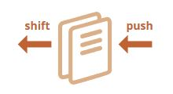
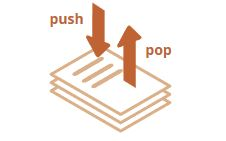
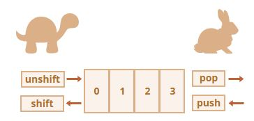
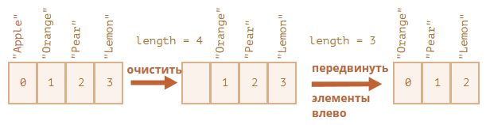
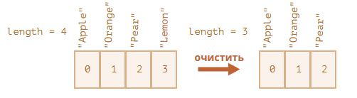

Массивы.
Для хранения упорядоченных коллекций существует особая структура данных, которая называется массив, Array.
Объявление
Существует два варианта синтаксиса для создания пустого массива:
let arr = new Array();
let arr = [];
Практически всегда используется второй вариант синтаксиса. В скобках мы можем указать начальные значения элементов:
let fruits = ["Яблоко", "Апельсин", "Слива"];
Элементы массива нумеруются, начиная с нуля.
Мы можем получить элемент, указав его номер в квадратных скобках:
let fruits = ["Яблоко", "Апельсин", "Слива"];
alert( fruits[0] ); // Яблоко
alert( fruits[1] ); // Апельсин
alert( fruits[2] ); // Слива
Мы можем заменить элемент:
fruits[2] = 'Груша'; // теперь ["Яблоко", "Апельсин", "Груша"]
…Или добавить новый к существующему массиву:
fruits[3] = 'Лимон'; // теперь ["Яблоко", "Апельсин", "Груша", "Лимон"]
Общее число элементов массива содержится в его свойстве length:
let fruits = ["Яблоко", "Апельсин", "Слива"];
alert( fruits.length ); // 3
Вывести массив целиком можно при помощи alert.
let fruits = ["Яблоко", "Апельсин", "Слива"];
alert( fruits ); // Яблоко, Апельсин, Слива
В массиве могут храниться элементы любого типа.
// разные типы значений
let arr = [ 'Яблоко', { name: 'Джон' }, true, function() { alert('привет'); } ];
// получить элемент с индексом 1 (объект) и затем показать его свойство
alert( arr[1].name ); // Джон
// получить элемент с индексом 3 (функция) и выполнить её
arr[3](); // привет
Получение последних элементов при помощи «at»
Допустим, нам нужен последний элемент массива.
Некоторые языки программирования позволяют использовать отрицательные индексы для той же цели, как-то так: fruits[-1].
Однако, в JavaScript такая запись не сработает. Её результатом будет undefined, поскольку индекс в квадратных скобках понимается буквально.
Мы можем явно вычислить индекс последнего элемента, а затем получить к нему доступ вот так: fruits[fruits.length - 1].
let fruits = ["Apple", "Orange", "Plum"];
alert( fruits[fruits.length-1] ); // Plum
Немного громоздко, не так ли? Нам нужно дважды написать имя переменной.
К счастью, есть более короткий синтаксис: fruits.at(-1):
let fruits = ["Apple", "Orange", "Plum"];
// то же самое, что и fruits[fruits.length-1]
alert( fruits.at(-1) ); // Plum
Другими словами, arr.at(i):
- это ровно то же самое, что и
arr[i], еслиi >= 0. - для отрицательных значений
i, он отступает от конца массива.
Методы pop/push, shift/unshift
Очередь – один из самых распространённых вариантов применения массива. В области компьютерных наук так называется упорядоченная коллекция элементов, поддерживающая два вида операций:
pushдобавляет элемент в конец.shiftудаляет элемент в начале, сдвигая очередь, так что второй элемент становится первым.
- 
Массивы поддерживают обе операции.
На практике необходимость в этом возникает очень часто. Например, очередь сообщений, которые надо показать на экране.
Существует и другой вариант применения для массивов – структура данных, называемая стек.
Она поддерживает два вида операций:
pushдобавляет элемент в конец.popудаляет последний элемент.
Таким образом, новые элементы всегда добавляются или удаляются из «конца».
Примером стека обычно служит колода карт: новые карты кладутся наверх и берутся тоже сверху:
- 
Массивы в JavaScript могут работать и как очередь, и как стек. Мы можем добавлять/удалять элементы как в начало, так и в конец массива.
В компьютерных науках структура данных, делающая это возможным, называется двусторонняя очередь.
Методы, работающие с концом массива:
pop
Удаляет последний элемент из массива и возвращает его:
let fruits = ["Яблоко", "Апельсин", "Груша"];
alert( fruits.pop() ); // удаляем "Груша" и выводим его
alert( fruits ); // Яблоко, Апельсин
И fruits.pop() и fruits.at(-1) возвращают последний элемент массива, но fruits.pop() также изменяет массив, удаляя его.
push
Добавляет элемент в конец массива:
let fruits = ["Яблоко", "Апельсин"];
fruits.push("Груша");
alert( fruits ); // Яблоко, Апельсин, Груша
Вызов fruits.push(...) равнозначен fruits[fruits.length] = ....
Методы, работающие с началом массива:
shift
Удаляет из массива первый элемент и возвращает его:
let fruits = ["Яблоко", "Апельсин", "Груша"];
alert( fruits.shift() ); // удаляем Яблоко и выводим его
alert( fruits ); // Апельсин, Груша
unshift
Добавляет элемент в начало массива:
let fruits = ["Апельсин", "Груша"];
fruits.unshift('Яблоко');
alert( fruits ); // Яблоко, Апельсин, Груша
Методы push и unshift могут добавлять сразу несколько элементов:
let fruits = ["Яблоко"];
fruits.push("Апельсин", "Груша");
fruits.unshift("Ананас", "Лимон");
// ["Ананас", "Лимон", "Яблоко", "Апельсин", "Груша"]
alert( fruits );
Внутреннее устройство массива
Массив – это особый подвид объектов. Квадратные скобки, используемые для того, чтобы получить доступ к свойству arr[0] – это по сути обычный синтаксис доступа по ключу, как obj[key], где в роли obj у нас arr, а в качестве ключа – числовой индекс.
Массивы расширяют объекты, так как предусматривают специальные методы для работы с упорядоченными коллекциями данных, а также свойство length. Но в основе всё равно лежит объект.
Следует помнить, что в JavaScript существует 8 основных типов данных. Массив является объектом и, следовательно, ведёт себя как объект.
Например, копируется по ссылке:
let fruits = ["Банан"]
let arr = fruits; // копируется по ссылке (две переменные ссылаются на один и тот же массив)
alert( arr === fruits ); // true
arr.push("Груша"); // массив меняется по ссылке
alert( fruits ); // Банан, Груша - теперь два элемента
…Но то, что действительно делает массивы особенными – это их внутреннее представление. Движок JavaScript старается хранить элементы массива в непрерывной области памяти, один за другим, так, как это показано на иллюстрациях к этой главе. Существуют и другие способы оптимизации, благодаря которым массивы работают очень быстро.
Но все они утратят эффективность, если мы перестанем работать с массивом как с «упорядоченной коллекцией данных» и начнём использовать его как обычный объект.
Например, технически мы можем сделать следующее:
let fruits = []; // создаём массив
fruits[99999] = 5; // создаём свойство с индексом, намного превышающим длину массива
fruits.age = 25; // создаём свойство с произвольным именем
Это возможно, потому что в основе массива лежит объект. Мы можем присвоить ему любые свойства.
Но движок поймёт, что мы работаем с массивом, как с обычным объектом. Способы оптимизации, используемые для массивов, в этом случае не подходят, поэтому они будут отключены и никакой выгоды не принесут.
Варианты неправильного применения массива:
- Добавление нечислового свойства, например:
arr.test = 5. - Создание «дыр», например: добавление
arr[0], затемarr[1000](между ними ничего нет). - Заполнение массива в обратном порядке, например:
arr[1000],arr[999]и т.д.
Массив следует считать особой структурой, позволяющей работать с упорядоченными данными. Для этого массивы предоставляют специальные методы. Массивы тщательно настроены в движках JavaScript для работы с однотипными упорядоченными данными, поэтому, пожалуйста, используйте их именно в таких случаях. Если вам нужны произвольные ключи, вполне возможно, лучше подойдёт обычный объект {}.
Эффективность
Методы push/pop выполняются быстро, а методы shift/unshift – медленно.
- 
Почему работать с концом массива быстрее, чем с его началом? Давайте посмотрим, что происходит во время выполнения:
fruits.shift(); // удаляем первый элемент с начала
Просто взять и удалить элемент с номером 0 недостаточно. Нужно также заново пронумеровать остальные элементы.
Операция shift должна выполнить 3 действия:
- Удалить элемент с индексом
0. - Сдвинуть все элементы влево, заново пронумеровать их, заменив
1на0,2на1и т.д. - Обновить свойство
length.
- 
Чем больше элементов содержит массив, тем больше времени потребуется для того, чтобы их переместить, больше операций с памятью.
То же самое происходит с unshift: чтобы добавить элемент в начало массива, нам нужно сначала сдвинуть существующие элементы вправо, увеличивая их индексы.
А что же с push/pop? Им не нужно ничего перемещать. Чтобы удалить элемент в конце массива, метод pop очищает индекс и уменьшает значение length.
Действия при операции pop:
fruits.pop(); // удаляем один элемент с конца
- 
Метод pop не требует перемещения, потому что остальные элементы остаются с теми же индексами. Именно поэтому он выполняется очень быстро.
Аналогично работает метод push.
Перебор элементов
Одним из самых старых способов перебора элементов массива является цикл for по цифровым индексам:
let arr = ["Яблоко", "Апельсин", "Груша"];
for (let i = 0; i < arr.length; i++) {
alert( arr[i] );
}
Но для массивов возможен и другой вариант цикла, for..of:
let fruits = ["Яблоко", "Апельсин", "Слива"];
// проходит по значениям
for (let fruit of fruits) {
alert( fruit );
}
Цикл for..of не предоставляет доступа к номеру текущего элемента, только к его значению, но в большинстве случаев этого достаточно. А также это короче.
Технически, так как массив является объектом, можно использовать и вариант for..in:
let arr = ["Яблоко", "Апельсин", "Груша"];
for (let key in arr) {
alert( arr[key] ); // Яблоко, Апельсин, Груша
}
Но на самом деле это – плохая идея. Существуют скрытые недостатки этого способа:
- Цикл
for..inвыполняет перебор всех свойств объекта, а не только цифровых. В браузере и других программных средах также существуют так называемые «псевдомассивы» – объекты, которые выглядят, как массив. То есть, у них есть свойствоlengthи индексы, но они также могут иметь дополнительные нечисловые свойства и методы, которые нам обычно не нужны. Тем не менее, циклfor..inвыведет и их. Поэтому, если нам приходится иметь дело с объектами, похожими на массив, такие «лишние» свойства могут стать проблемой. - Цикл
for..inоптимизирован под произвольные объекты, не массивы, и поэтому в 10-100 раз медленнее. Увеличение скорости выполнения может иметь значение только при возникновении узких мест. Но мы всё же должны представлять разницу.
В общем, не следует использовать цикл for..in для массивов.
Немного о «length»
Свойство length автоматически обновляется при изменении массива. Если быть точными, это не количество элементов массива, а наибольший цифровой индекс плюс один.
Например, единственный элемент, имеющий большой индекс, даёт большую длину:
let fruits = [];
fruits[123] = "Яблоко";
alert( fruits.length ); // 124
Обратите внимание, что обычно мы не используем массивы таким образом.
Ещё один интересный факт о свойстве length – его можно перезаписать.
Если мы вручную увеличим его, ничего интересного не произойдёт. Зато, если мы уменьшим его, массив станет короче. Этот процесс необратим, как мы можем понять из примера:
let arr = [1, 2, 3, 4, 5];
arr.length = 2; // укорачиваем до двух элементов
alert( arr ); // [1, 2]
arr.length = 5; // возвращаем length как было
alert( arr[3] ); // undefined: значения не восстановились
Таким образом, самый простой способ очистить массив – это arr.length = 0;.
new Array()
Существует ещё один вариант синтаксиса для создания массива:
let arr = new Array("Яблоко", "Груша", "и тд");
Он редко применяется, так как квадратные скобки [] короче. Кроме того, у него есть хитрая особенность.
Если new Array вызывается с одним аргументом, который представляет собой число, он создаёт массив без элементов, но с заданной длиной.
Давайте посмотрим, как можно оказать себе медвежью услугу:
let arr = new Array(2); // создастся ли массив [2]?
alert( arr[0] ); // undefined! нет элементов.
alert( arr.length ); // length 2
Как мы видим, в коде, представленном выше, в new Array(number) все элементы равны undefined.
Чтобы избежать появления таких неожиданных ситуаций, мы обычно используем квадратные скобки, если, конечно, не знаем точно, что по какой-то причине нужен именно Array.
Многомерные массивы
Массивы могут содержать элементы, которые тоже являются массивами. Это можно использовать для создания многомерных массивов, например, для хранения матриц:
let matrix = [
[1, 2, 3],
[4, 5, 6],
[7, 8, 9]
];
alert( matrix[1][1] ); // 5, центральный элемент
toString
Массивы по-своему реализуют метод toString, который возвращает список элементов, разделённых запятыми.
let arr = [1, 2, 3];
alert( arr ); // 1,2,3
alert( String(arr) === '1,2,3' ); // true
Давайте теперь попробуем следующее:
alert( [] + 1 ); // "1"
alert( [1] + 1 ); // "11"
alert( [1,2] + 1 ); // "1,21"
Массивы не имеют ни Symbol.toPrimitive, ни функционирующего valueOf, они реализуют только преобразование toString, таким образом, здесь [] становится пустой строкой, [1] становится "1", а [1,2] становится "1,2".
Когда бинарный оператор плюс + добавляет что-либо к строке, он тоже преобразует это в строку, таким образом:
alert( "" + 1 ); // "1"
alert( "1" + 1 ); // "11"
alert( "1,2" + 1 ); // "1,21"
Не сравнивайте массивы при помощи ==
В JavaScript, в отличие от некоторых других языков программирования, массивы не следует сравнивать при помощи оператора ==.
У этого оператора нет специального подхода к массивам, он работает с ними, как и с любыми другими объектами.
Давайте ещё раз напомним правила:
- Два объекта равны друг другу
==только в том случае, если они ссылаются на один и тот же объект. - Если один из аргументов
==является объектом, а другой – примитивом, то объект преобразуется в примитив, как описано в главе Преобразование объектов в примитивы. - …За исключением
nullиundefined, которые равны==друг другу и ничему больше.
Оператор строгого равенства === ещё проще, так как он не преобразует типы.
Итак, если мы всё же сравниваем массивы с помощью ==, то они никогда не будут одинаковыми, если только мы не сравним две переменные, которые ссылаются на один и тот же массив
Например:
alert( [] == [] ); // false
alert( [0] == [0] ); // false
Технически эти массивы являются разными объектами. Так что они не равны. Оператор == не выполняет поэлементное сравнение.
Сравнение с примитивами также может дать, казалось бы, странные результаты:
alert( 0 == [] ); // true
alert('0' == [] ); // false
Здесь, в обоих случаях, мы сравниваем примитив с объектом массива. Таким образом, массив [] преобразуется в примитив с целью сравнения и становится пустой строкой ''.
Затем продолжается процесс сравнения с примитивами, как описано в главе Преобразование типов:
// после того, как [] был преобразован в ''
alert( 0 == '' ); // true, так как '' преобразуется в число 0
alert('0' == '' ); // false, нет преобразования типов, разные строки
Так как же сравнить массивы?
Это просто: не используйте оператор ==. Вместо этого сравните их по элементам в цикле или используя методы итерации, описанные в следующей главе.